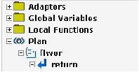
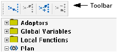
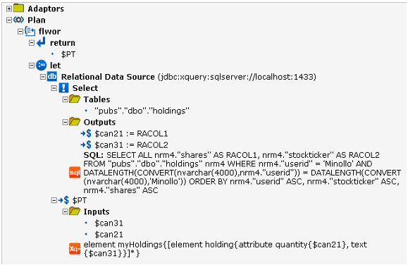

Generating XQuery Execution Plans
The DataDirect XQuery feature, Plan Explain, allows you to generate an XQuery execution plan so that you can see how DataDirect XQuery will execute your query. For example, if your query accesses a relational data source, the plan will include the SQL statements that DataDirect XQuery will send to the database.
The main benefit of using this feature is that you can tune your queries for the best performance possible.
NOTE: The Plan Explain feature is also available in Stylus Studio and DataDirect XQuery Editor for Eclipse.
Format of an XQuery Execution Plan
DataDirect XQuery outputs the plan in either XHTML format (the default) or XML format. The XHTML format provides a graphical representation of the plan. DataDirect XQuery also supports an XML format in the case that you want to create your own graphical representation of the plan or to archive the plan.
XHTML Format
The XHTML representation of an XQuery execution plan is a tree structure that provides the details of how DataDirect XQuery will execute the query for which the plan was generated. You can use one of the following browsers to display the XHTML file: Internet Explorer 6.x or 7.x, or Firefox 2.x.
The following figure shows an example of an execution plan in XHTML format.

The tree can contain the following top-level nodes:
- Adaptors. This node contains a list of database resources that will be involved in the execution of the query. These resources can include JDBC connections, temporary tables, and deferred SQL statements used in the context of DataDirect XQuery update functionality.
- Global Variables. This node contains a list of global variables that are available to the query plan, such as external variables defined by the query and variables defined as part of the generation of the execution plan.
- Local Functions. This node contains a list of user-defined functions used during the query evaluation. Each user-defined function listed in this node has a plan description associated with it. Plan descriptions are described next.
- Plan. This node contains the description of the query execution plan. It contains the nodes of the plan, for example, flwor nodes and the nodes within the flwor nodes such as for, let, and return.
You can navigate the tree to check where variables are defined and where they are referenced. For example, you can navigate from one adaptor’s definition to its references and vice-versa. To navigate the tree, you use either the toolbar displayed at the top of the tree or right-click an item in the tree and use the context-sensitive menu.

The icons on the toolbar perform the following tasks:
Enabling Plan Explain
You can enable Plan Explain through XQJ or through the plan-explain option declaration.
Example 1: Enabling Through XQJ
The following code is an example of enabling Plan Explain through XQJ using the proprietary interface ExtPlanExplain. This example outputs the query execution plan to an XHTML file named queryplan.xhtml.
... XQExpression exp = conn.createExpression(); ExtPlanExplain explain = (ExtPlanExplain)exp; XQResultSequence seq = explain.explain("for $item in fn:doc('items.xml')/items/item return $item"); seq.writeSequence(new FileOutputStream("queryplan.xhtml"), null); exp.close();Refer to the Javadoc for details about the ExtPlanExplain interface.
The following code is an example of outputting the query execution plan to an XML file named queryplan.xml.
... XQExpression exp = conn.createExpression(); ExtPlanExplain explain = (ExtPlanExplain)exp; explain.setPlanFormat(PLAN_EXPLAIN_AS_XML); XQResultSequence seq = explain.explain("for $item in fn:doc('items.xml')/items/item return $item"); seq.writeSequence(new FileOutputStream("queryplan.xml"), null); exp.close();Example 2: Enabling Through an Option Declaration
The following example shows how to enable Plan Explain using the plan-explain option declaration.
NOTE: When you enable Plan Explain through an option declaration, the query execution plan is returned instead of XQuery results.
See the description of plan-explain in Table 12-1 for more information about this option declaration.
Example of an XQuery Execution Plan
This example XQuery execution plan provides information about how DataDirect XQuery translates the following query, which accesses one relational data source, into a SQL Select statement and how XML results are constructed.
declare option ddtek:plan-explain 'format=xhtml'; <myHoldings> { for $holdings in collection("pubs.dbo.holdings")/holdings where $holdings/userid = "Minollo" return <holding quantity="{$holdings/shares}">{$holdings/stockticker/text()}</holding> } </myHoldings>In the following execution plan, notice how the Relational Data Source node includes details about the SQL Select statement, as well as information about how the result ($PT) is constructed.
